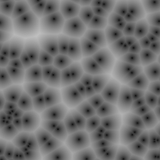

Cell Noise
Generates a cellular texture.
Scale
The scale of the noise function
name: scale
type: double
default: 1.00
minimum: 0.00
maximum: 20.00
ui-minimum: 0.00
ui-maximum: 20.00
ui-gamma: 1.00
ui-step-small: 0.01
ui-step-big: 1.00
ui-digits: 3
Shape
Interpolate between Manhattan and Euclidean distance.
name: shape
type: double
default: 2.00
minimum: 1.00
maximum: 2.00
ui-minimum: 1.00
ui-maximum: 2.00
ui-gamma: 1.00
ui-step-small: 0.00
ui-step-big: 0.10
ui-digits: 3
Rank
Select the n-th closest point
name: rank
type: int
default: 1
minimum: 1
maximum: 3
ui-minimum: 1
ui-maximum: 3
ui-gamma: 1.00
ui-step-small: 1
ui-step-big: 2
Iterations
The number of noise octaves.
name: iterations
type: int
default: 1
minimum: 1
maximum: 20
ui-minimum: 1
ui-maximum: 20
ui-gamma: 1.00
ui-step-small: 1
ui-step-big: 5
Palettize
Fill each cell with a random color
name: palettize
type: boolean
default: False
Random seed
The random seed for the noise function
name: seed
type: seed
default: 0
minimum: 0
maximum: +inf
pads: output
parent-class: GeglOperationPointRender
categories: render
OpenCL
source: operations/common/noise-cell.c
reference: Steven Worley. 1996. A cellular texture basis function. In Proceedings of the 23rd annual conference on Computer graphics and interactive techniques (SIGGRAPH '96).
position-dependent: true
 This page is part of the online GEGL Documentation, GEGL is a data flow based image processing library/framework, made to fuel GIMPs high-bit depth non-destructive editing future.
This page is part of the online GEGL Documentation, GEGL is a data flow based image processing library/framework, made to fuel GIMPs high-bit depth non-destructive editing future.